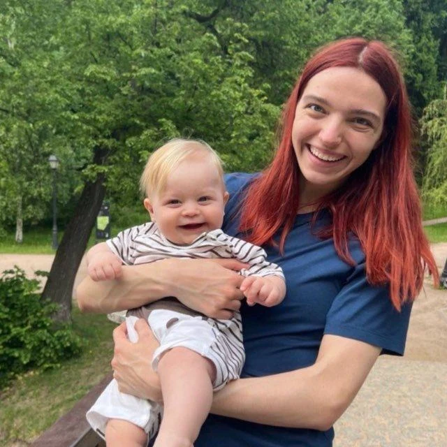
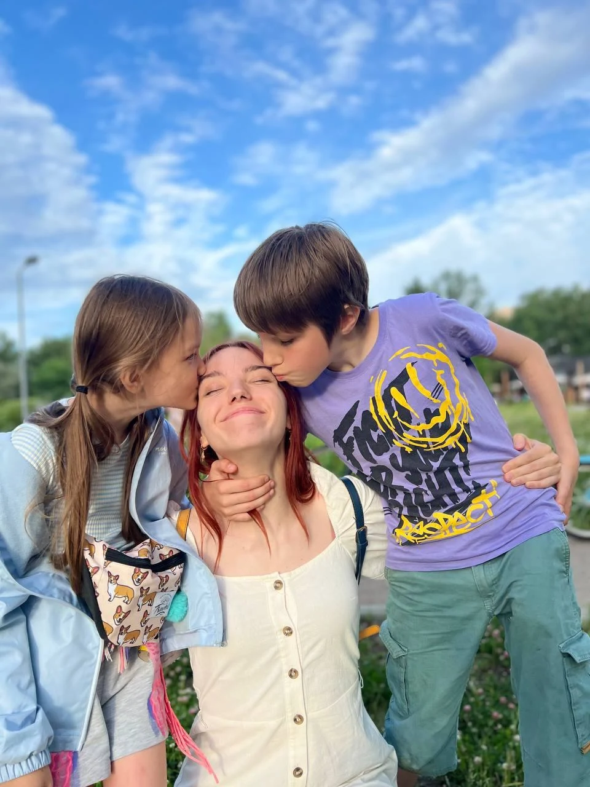

Изучаю отклики
Сверяю опыт кандидатки и её пожелания по графику и условиям с вашим запросом.
О подборе
Обсуждаю с кандидаткой ваш ритм жизни, привычки ребёнка и правила дома. Задаю вопросы о ситуациях, с которыми ей предстоит столкнуться.

Сверяю опыт кандидатки и её пожелания по графику и условиям с вашим запросом.

Уточняю условия вакансии и рассказываю кандидатке о вашей семье.

Задаю вопросы о ситуациях из жизни вашей семьи. В анкете объясняю, почему предлагаю познакомиться с няней и что стоит обсудить на встрече.